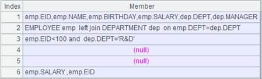

Description:
Get values of specified field(s) in a composite table according to key values in a table sequence or a cursor, concatenate them and return result as a table sequence or a cursor.
Syntax:
T.news(A/cs:K,x:C,¡;wi,...)
Note:
Composite table T and table sequence A or cursor cs have a relationship of many-to-one. The function retrieves specified field values x,... from T and concatenate them to form a new table sequence according to the correspondence between table sequence A or cursor cs¡¯s key/dimension values and T¡¯s fields (begin form the first field). It is required that A/cs be ordered by the key and their key has same order as that of T¡¯s first field keys.
It is used to join a table sequence or a cursor to a composite in a one-to-many relationship and return a result set containing all records in the composite table pointing to the table sequence or cursor¡¯s primary key. While T.new() function performs a join in a one-to-one or one-to-many relationship.
Parameters:
|
T |
A composite table |
|
A/cs |
A table sequence/cursor/composite table cursor |
|
K |
Field names; when there are K¡ parameters after A/cs, correspond them with theses specified fields |
|
x |
Field values |
|
C |
Column alias |
|
wi |
Filtering condition; multiple conditions are separated by comma(s) and they must be all met at the same time |
Options:
@r Copy records of the primary table and return result that aligned by A/cs and where aggregation can be performed
Return value:
A table sequence/cursor
Example:
|
|
A |
|
|
1 |
=file("score.ctx").open() |
Open a composite table file
 |
|
2 |
=demo.query("select * from students").keys(ID) |
Return a table sequence with ID as the key
|
|
3 |
=A1.news(A2:ID,STUDENTID,SUBJECT,SCORE;SUBJECT=="Math",SCORE>70) |
Join A1¡¯s composite table and A2¡¯s table sequence where the filteing condition is SUBJECT=Math & SCORE>70 and return eligible records in the composite table
|
|
4 |
=A1.news@r(A2:ID,NAME,sum(SCORE):TotalScore) |
Sum scores of all subjects for each student and return result:
|